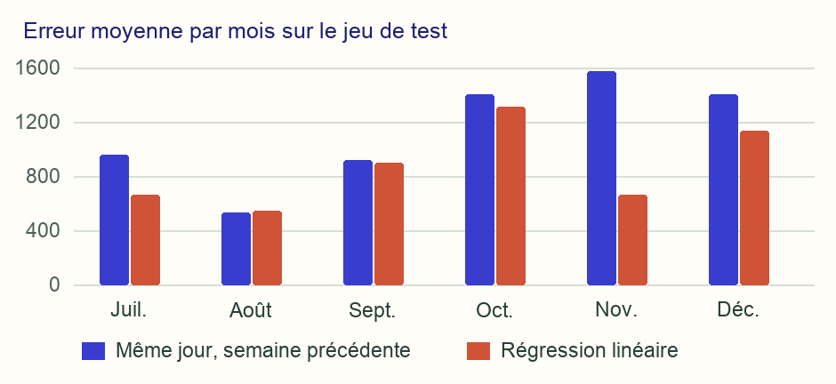

Prendre la semaine dernière comme point de départ
Si je dois prévoir les locations d’un mardi, je commencerais par regarder le mardi précédent. C’est une règle simple à appliquer. Pour savoir si une régression linéaire vaut le travail supplémentaire, il faut la comparer à cette règle sur les mêmes journées.
Vérifier le fichier avant de prévoir
Le fichier va du 1er janvier 2011 au 31 décembre 2012. Avant les calculs, le script vérifie que chaque jour apparaît une seule fois et que les locations des deux catégories d’usagers s’additionnent bien au total. Le modèle écarte ces deux nombres, qui ne sont connus qu’une fois la journée passée.
Se placer au moment de la prévision
La régression utilise le calendrier, la période de l’année, la tendance et les volumes observés la veille, une semaine et deux semaines plus tôt. Pour que la prévision soit utilisable, les chiffres de la veille doivent déjà être disponibles. La météo réellement observée le jour à prévoir, elle, ne l’est pas encore.
Le premier modèle apprend sur 2011 et passe une validation de janvier à juin 2012. Il est ensuite ajusté de nouveau avec les données disponibles jusqu’à fin juin. De juillet à décembre, les coefficients restent fixes. À chaque nouvelle date, le modèle peut utiliser les volumes déjà observés pour prévoir le lendemain.
Ce que montre le test
Sur les 184 jours de test, l’erreur absolue moyenne passe de 1 130 à 869 locations par jour, soit une baisse de 23,1 %. Le RMSE baisse aussi, de 1 648 à 1 193. En août, le repère hebdomadaire reste légèrement meilleur.
| Période | Jours | MAE J−7 | MAE modèle | RMSE J−7 | RMSE modèle |
|---|---|---|---|---|---|
| Janv.–juin 2012 | 182 | 1 091 | 850 | 1 469 | 1 092 |
| Juil.–déc. 2012 | 184 | 1 130 | 869 | 1 648 | 1 193 |

Pourquoi je regarderais le week-end à part
Sur la période de test, l’erreur moyenne du modèle est d’environ 751 locations en semaine et 1 161 le week-end. Une moyenne sur le semestre masque cet écart. Je regarderais quelles dates l’expliquent, notamment les jours fériés et les journées très atypiques, avant de décider si le même modèle convient à tous les jours.
Une erreur faible peut encore poser problème
La moyenne absolue compte les surestimations et les sous-estimations de la même façon. Pour un exploitant, prévoir trop peu peut laisser des clients sans vélo. Prévoir trop peut mobiliser des moyens pour rien. Je ferais donc évaluer les deux types d’erreur séparément par l’équipe terrain, avec les coûts propres à chaque décision.
Ma conclusion
Sur l’échantillon testé, la régression améliore le repère hebdomadaire sur cinq mois sur six. Le mois d’août rappelle pourquoi je garderais les deux prévisions côte à côte lors d’un premier pilote. Je testerais ensuite une référence hebdomadaire plus robuste, sur des dates récentes, et je ne passerais à une décision par station qu’avec des données à cette échelle.